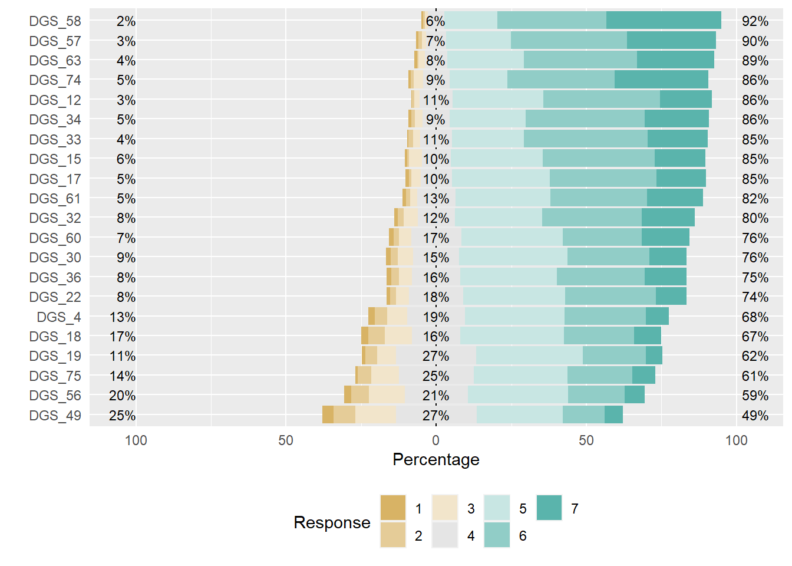
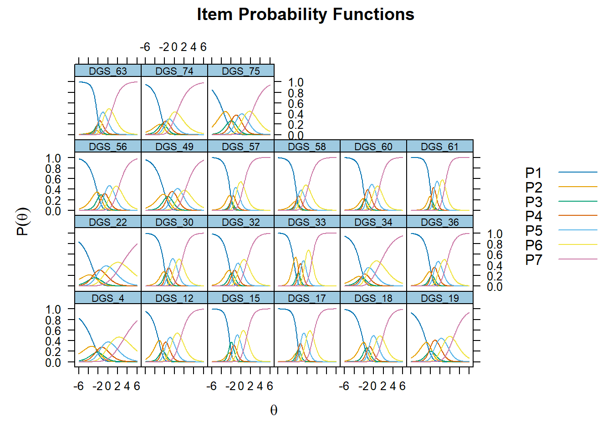
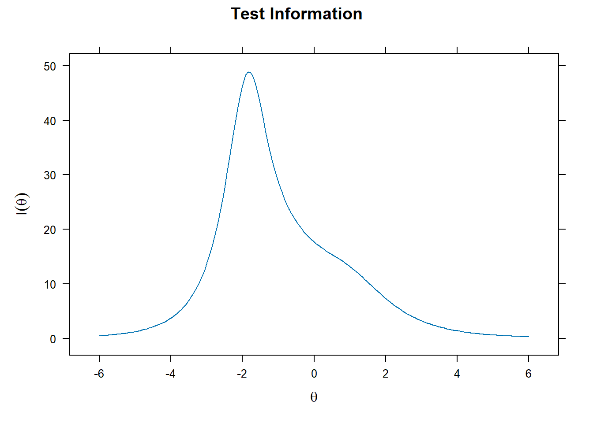
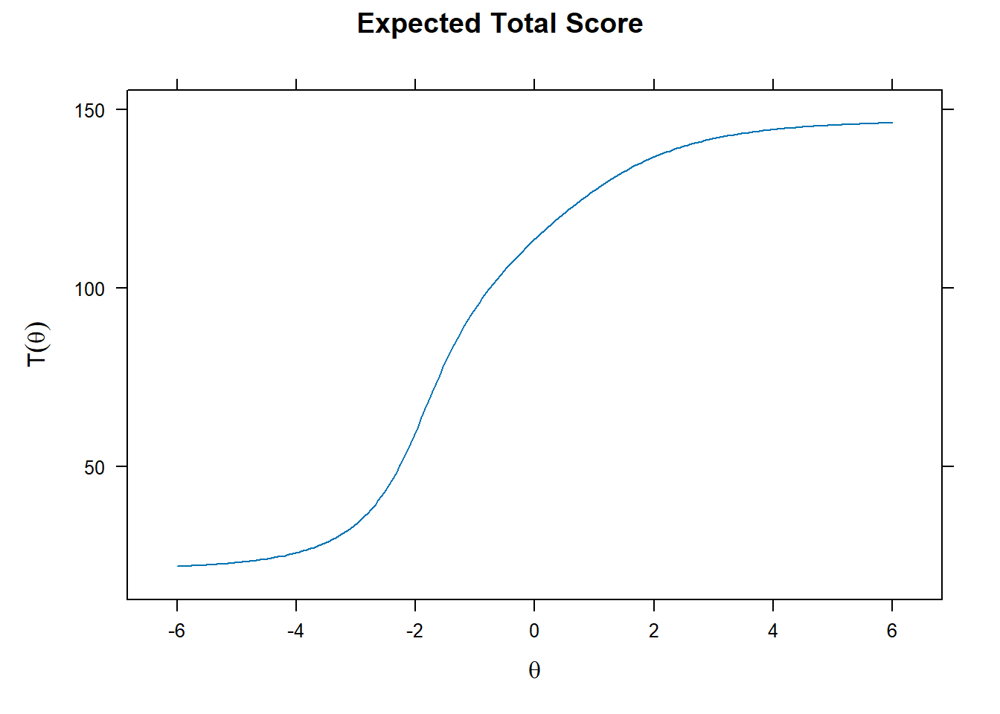
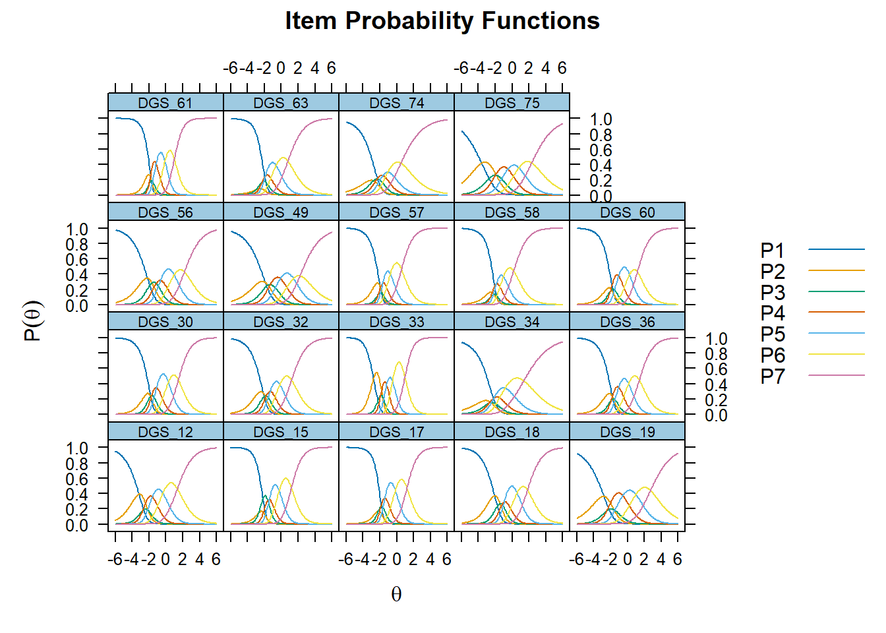

##PolytomousIRT(General Partial Credit Model)
In this example, I employed Generalized Partial Credit Model (GPCM) to analyze the data I gathered, aiming to validate the psychometric properties of a newly developed scale. The goal is to design item that is highly discriminating for people with high latent trait (i.e. extreme altruism). The item probablity and information graph provides insight into this aspect.
You can refer to this paper if you are interested in GPCM Muraki, E. (1992). A Generalized Partial Credit Model: Application of an EM Algorithm. Applied Psychological Measurement, 16(2), 159–176.
###cleaning
#6 factors model without behavioral items
DGS_6model_1 <- DGS %>%
select(c(DGS_4,DGS_12,DGS_15,DGS_17,DGS_18,DGS_19,DGS_22,DGS_30,DGS_32,DGS_33,DGS_34,DGS_36,DGS_56,DGS_49,DGS_57,DGS_58,DGS_60,DGS_61,DGS_63,DGS_74,DGS_75))#descriptive of the scale
visu_likert <- function(x,title){
x <- as.data.frame(lapply(x,factor))
likert_x <- likert(x)
likert_fit_x <- likert.bar.plot(likert_x)
plot(likert_fit_x)
}
visu_likert(DGS_6model_1)#Prosocial value
###IRT(I only included an example here with one latent variable)
temp <- capture.output({
DGS_IRT6_1 <- mirt(data = DGS_6model_1,
model = 1, #this is for one factor
itemtype = "gpcmIRT" #generalized partial credit model
)
})summary(DGS_IRT6_1)## F1 h2
## DGS_4 0.274 0.0752
## DGS_12 0.538 0.2900
## DGS_15 0.660 0.4351
## DGS_17 0.678 0.4599
## DGS_18 0.552 0.3052
## DGS_19 0.422 0.1781
## DGS_22 0.260 0.0675
## DGS_30 0.604 0.3645
## DGS_32 0.545 0.2975
## DGS_33 0.760 0.5780
## DGS_34 0.350 0.1226
## DGS_36 0.572 0.3267
## DGS_56 0.486 0.2361
## DGS_49 0.409 0.1670
## DGS_57 0.627 0.3931
## DGS_58 0.557 0.3102
## DGS_60 0.594 0.3530
## DGS_61 0.733 0.5380
## DGS_63 0.512 0.2623
## DGS_74 0.387 0.1494
## DGS_75 0.397 0.1575
##
## SS loadings: 6.067
## Proportion Var: 0.289
##
## Factor correlations:
##
## F1
## F1 1plot(DGS_IRT6_1, type = "trace")
plot(DGS_IRT6_1, type = "info")
plot(DGS_IRT6_1) #expected score curve
##recommend taking out 4 and 22
DGS_6model_1 <- DGS_6model_1%>%
select(!c(DGS_4,DGS_22))
temp <- capture.output({
DGS_IRT6_1 <- mirt(data = DGS_6model_1,
model = 1, #this is for one factor
itemtype = "gpcmIRT" #generalized partial credit model
)
})summary(DGS_IRT6_1)## F1 h2
## DGS_12 0.522 0.273
## DGS_15 0.666 0.444
## DGS_17 0.673 0.453
## DGS_18 0.556 0.309
## DGS_19 0.412 0.170
## DGS_30 0.615 0.378
## DGS_32 0.540 0.292
## DGS_33 0.764 0.583
## DGS_34 0.343 0.118
## DGS_36 0.577 0.333
## DGS_56 0.486 0.236
## DGS_49 0.407 0.166
## DGS_57 0.637 0.405
## DGS_58 0.560 0.314
## DGS_60 0.590 0.348
## DGS_61 0.742 0.551
## DGS_63 0.511 0.261
## DGS_74 0.390 0.152
## DGS_75 0.385 0.148
##
## SS loadings: 5.933
## Proportion Var: 0.312
##
## Factor correlations:
##
## F1
## F1 1plot(DGS_IRT6_1, type = "trace")
#traces suggest that 2-4 options were not commonly used
plot(DGS_IRT6_1, type = "info")#item information suggests that we need to improve the ability to identify people on top of the altruism scores.
#person fit
#mirt::itemfit(DGS_IRT6_1)
#DGS_IRT6_1_person_fit <- mirt::personfit(DGS_IRT6_1)